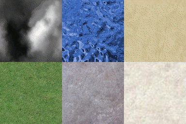
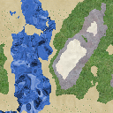
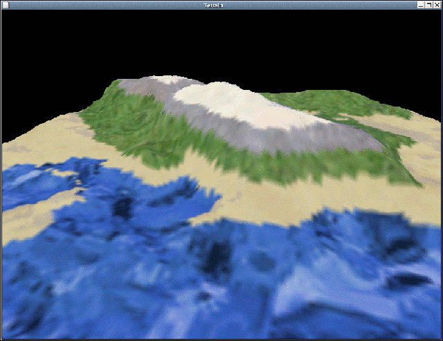
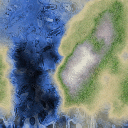
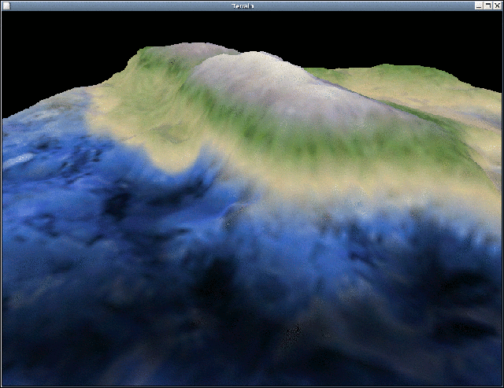

Procedural Texture Generation for Height Mapped Terrain - By PerspectiveOutline:
What is Procedural Texture Generation?Procedural Texture Generation is the (procedural) process of generating a texture. Ambiguities aside, it's a process in which one can create a texture by performing calculations using data from various possible sources. For example, the data can be existing textures which will be combined into a new texture based on a given model, or random data generated by noise functions. In this article we will explore a few of the possible ways to use Procedural Texture Generation to create custom textures for height maps.Approaches to Procedural Texture Generation for Height MapsTexture Combination:A popular way of generating a custom texture for a height map is to combine parts of other "source" textures in such a way that the resulting texture maps directly to the features of the height map. For example, a snow texture could be used for the peaks of mountains, a rock texture for high altitudes not covered in snow, a grass texture for areas below the mountains, a sand texture for lower beach like areas, and a water texture for the lowest points on the map. This article will consider two possibilities for combining textures, cutting and blending. Cutting sections pieces of textures off and stitches them together to make a new texture. Blending, an enhancement of cutting, blends the textures together by weighting the colour values of the sections based on the height map data.Example: Let's assume our height map has values 0 - 255 and we are combining 5 textures as described above. We need to divide the height map's range into 5 equal(ish) regions to represent each of the 5 textures. Tex [min, max] ----------------- water: [0, 50] sand : [51, 101] grass: [102, 152] rock : [153, 203] snow : [204, 255]  A height map and 5 textures to represent each region. Cutting:To generate the texture using a cutting algorithm, iterate through the height values (pixel values) in the height map and select the corresponding pixel value from the source texture that the height value falls under. For example, if the height map has a value of 115 at the coordinates (30, 55), then the pixel value of our generated texture at (30, 55) will be taken from the grass texture's pixel value at (30, 55).
Procedure generateTextureWithCutting(heightMap, regions, newTexture)
for each (i, j) in dimensions of 'heightMap'
h = pixel value of 'heightMap' at (i, j)
t = texture from 'regions' who's range covers 'h'
v = pixel value of 't' at (i, j)
write 'v' to 'newTexture' at position (i, j)
 The generated texture.  The terrain with the Cut and Stitch texture. Blending:The cutting algorithm produces noticeable starting and ending points for the regions. An improvement on this algorithm is to blend the pixel values based on height value. Any height value that fits into a region +- range will be influenced by that texture. The closer the height value is to the top (or higher end) of a region, the more it will be influenced by that texture. To generate the texture using a blending algorithm, iterate through the height values in the height map and calculate a pixel value for the generated texture based on a weighted summation of values found in the source textures. The weight of each pixel value in the source textures can be calculated as follows:
For example: Using the sample values above with a height value of 195 at coordinates (60, 85) would yield the sum of... (51 - abs( 195 - 50)) / 51 = -1.843 = 0 (51 - abs( 195 - 101)) / 51 = -0.843 = 0 (51 - abs( 195 - 152)) / 51 = 0.157 * Grass texture's value at (60, 85) (51 - abs( 195 - 203)) / 51 = 0.843 * Rock texture's value at (60, 85) (51 - abs( 195 - 255)) / 51 = -0.176 = 0[*notice that a texture will only apply to a height within upperBound +- range exclusively. This allows an optimization to only check the two textures which will affect the final pixel value. Ways of applying this optimization are implementation dependent. The following algorithm does not include any optimizations.]
Procedure generateTextureWithBlending(heightMap, regions, newTexture)
for each (i, j) in dimensions of 'heightMap'
h = pixel value of 'heightMap' at (i, j)
v = 0
for each r in regions
v += weight(h, r) * pixel value of 'r.texture' at (i, j)
write 'v' to 'newTexture' at position (i, j)
Procedure weight(height, region) -> weight ([0, 1.0] float)
w = (region.range - abs(height - region.max)) / region.range
return (w < 0) ? 0 : w
Structure region
texture # The texture for this region.
range # The range covered by this region.
max # The high end of this region's range.
 The generated texture.  The terrain with the blended texture. There are many different approaches to Procedural Texture Generation but I'm tired and if you actually read all of the above you're probably getting bored so I'll limit this article to what has been mentioned above. One other popular mechanism worth mentioning is noise generation. See http://www.opengl.org/resources/code/samples/sig99/advanced99/notes/node91.html for more information on noise generation. Now that you've read the article, join the discussion |